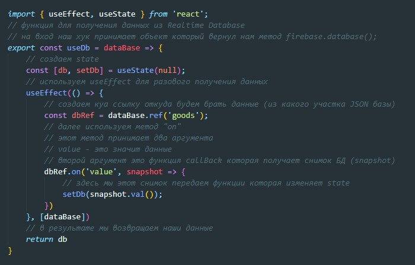
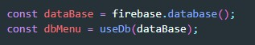
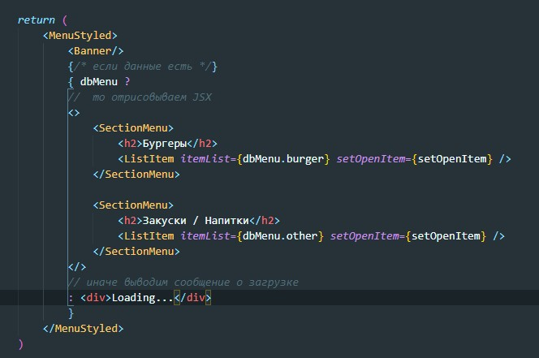

Напишем кастомный хук для получения данных из Realtime Database
Далее в App.js мы импортируем наш хук и вызываем его передавая в него объект с БД
Теперь через пропсы мы передаем полученные данные и отрисовываем их в компоненте с помощью map
